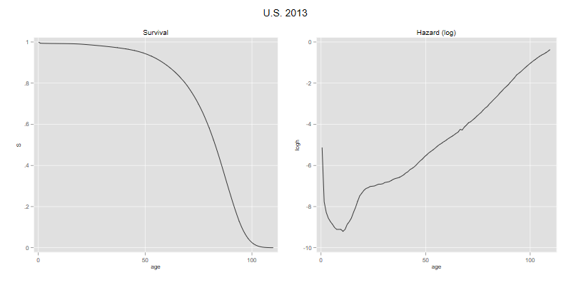
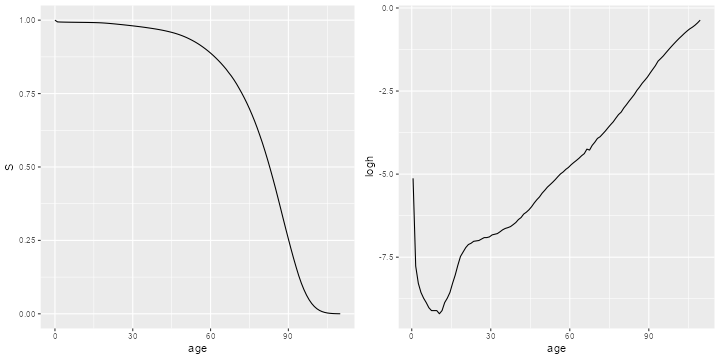
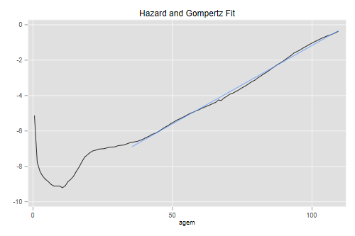
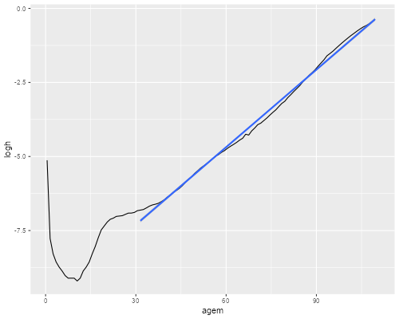

The file us2013s.dat has two columns representing age and the survival function by single years of age, for ages 0 to 110. The data come from the 2013 period life table for the U.S. I downloaded them from www.mortality.org, which seems more user-friendly than the National Center for Health Statistics, the original source.
{% include srtabs.html %}Here’s how to read and plot the survival function, and how to compute and plot the (log of the) hazard function.
. insheet using https://grodri.github.io/datasets/us2013s.dat, ///
> delim(" ") case clear
(2 vars, 111 obs)
. gen H = -log(S)
. gen agem = age + 0.5
. gen h = H[_n+1] - H
(1 missing value generated)
. gen logh = log(h)
(1 missing value generated)
. line S age, name(p1, replace) title(Survival)
. line logh agem, xtitle("age") name(p2, replace) title("Hazard (log)")
. graph combine p1 p2, xsize(8) ysize(4) title("U.S. 2013")
. graph export us2013.png, width(800) height(400) replace
file us2013.png saved as PNG format
> library(dplyr)
> library(ggplot2)
> library(gridExtra)
> us <- read.table("https://grodri.github.io/datasets/us2013s.dat", header=TRUE)
> us <- mutate(us,
+ H = -log(S),
+ agem =age + 0.5,
+ h = c(diff(H), NA),
+ logh=log(h))
> g1 <- ggplot(us, aes(x=age, y=S)) + geom_line()
> g2 <- ggplot(slice(us,-n()), aes(x=agem, y=logh)) + geom_line() + xlab("age")
> g <- arrangeGrob(g1, g2, ncol=2)
> ggsave("us2013r.png", plot=g, width=10, height=5, dpi=72);
 
The Gompertz distribution provides a remarkably close fit to the hazard at adult ages, as one would expect from the linearity of the graph. Here’s a visual check of the fit at ages above 35:
. line logh agem || lfit logh agem if agem > 35, ///
> title("Hazard and Gompertz Fit") legend(off)
. graph export us2013g.png, width(500) replace
file us2013g.png saved as PNG format
> adults <- filter(us, age > 30, age < 110)
> ggplot(us, aes(x=agem, y=logh)) + geom_line() +
+ stat_smooth(data=adults,method="lm")
> ggsave("us2013gr.png", width=500/72, height=400/72, dpi=72)
 
The U.S. survival function for 2002 is here, in a file that has age and S but no header. How much has the hazard function changed between 2002 and 2013?